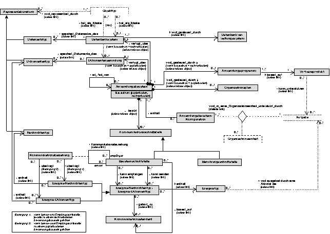
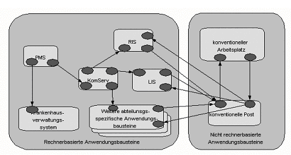

On the logical tool layer, the application components are the focus of attention. Application components support functions and process, store and transport data representing objects of certain object types. A particularly important aspect of this layer is where object types are logically stored and how application building components must communicate to ensure that the required access to information is secured when performing functions.
Application components are information processing tools that are used directly or indirectly by the users of the hospital information system to perform the functions of the hospital. An application component can support the completion of one or more functions either completely or only partially. In the latter case, several application components may jointly support the completion of a specific function. Application building components belong to the logical tools. Physical tools are required to realize a logical tool for information processing (see Static View of the Physical Tool layer). In contrast to the logical tools, these are - like e.g. a workstation computer - physically tangible - but directly, i.e. without an installed application component, not usable as a tool for the user.
An application component is realized byNote: The relationship between application component - application program - software product is illustrated by the following example: If a hospital buys, for example, an archive management system for patient file archives, let's call it ArchiMed, from the company Graecia GmbH, the archive management system is initially 'empty'. The diskettes or CD-ROMs that are delivered to other hospitals usually have the same content. The hospital-specific adaptations have yet to be made, e.g. parameters have to be set, i.e. 'filled' with data, how the files are sorted, which departments are available with which cost center numbers, and of course the hospital's name, so that the name can appear on the screen or on letters. After these adaptations - also known as adaption - the installation and commissioning, the ArchiMed software product from Graecia GmbH becomes an application component specific to this hospital, which can be called ARCHIVE.
Note: The same software product can be installed several times on the same or different computers. This results in different application components. In the case of multiple installations on different computers and identical adaptations, the application components can be distinguished (exclusively) by the physical computer systems on which they are installed. If a software product is installed several times with identical adaptation on the same computer, a distinction is not so easy.
Fig. 1 shows the metamodel of the logical tool layer of a hospital information system. The dotted classes and associative relationships show the relationship between the domain layer and the logical tool layer (see Inter-layer Relationships).

An example of a logical tool layer of a hospital information system is shown in Fig. 2. The rounded rectangles show application components, the small ovals within the application components show the component interfaces. The directed edges between component interfaces of different application components represent the communication relations.
The left part of the figure shows the computer-aided part of a hospital information system: a patient management system (PVS), a radiology information system (RIS), a laboratory information system (LIS), a communication server (KomServ), a hospital management system and other unspecified department information systems. The right part shows paper-based application components, the (paper-based) mail and a paper-based clinical workstation.
This example is simplified and fictitious. However, it shows a very typical situation. While the hospital administration and functional areas are supported by computer-based application components, there are only paper-based application components for typical clinical tasks. A communication server is available for the communication between the computer-based application components, but obviously not all application components use or can use it. As a consequence, proprietary building block interfaces are also provided. The fact that typical clinical tasks are not supported by computer-based application components requires a large number of component interfaces between the computer-supported part of the HIS and the non-computer-supported part, which can lead to problems, for example, with regard to media breaks. Such digital-analogue interfaces are implemented, for example, by printers and document readers or the corresponding software.
